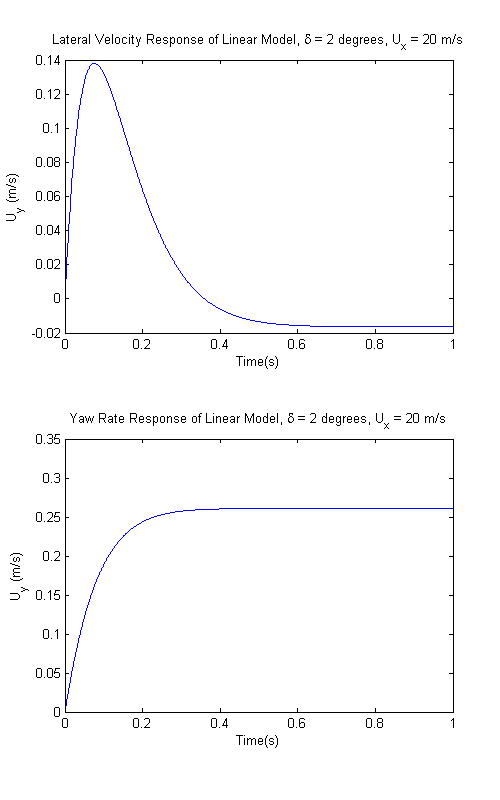

% Script for 2011 ME227 Homework Assignment 1 Problem 1 % Author: Ruslan Kurdyumov % Date: April 4, 2011 % Make sure you have a clean environment in which to work clear all close all clc % Add the path to our common files that we will often recycle addpath('../Common') % Enumerate the wheels (this should appear in all your files) lf = 1; rf = 2; lr = 3; rr = 4; % First load the parameters for the vehicle you are going to use vehicleTTS % Define the simulation parameters for your first simulation. % Our state variables are x = [Uy r]' where Uy = lateral velocity, r = yaw rate % Define the initial conditions of the simulation % Define testing scenario driver.mode = 'step'; % Type of steering (control strategy or maneuver) driver.delta0 = 0; % Initial steering angle driver.deltaf = 2*pi/180; % Steering angle during the step driver.steertime = 0; % Time to start the step simulation.speed = 20; % Perform the maneuver at 20 m/s % Define which models we want to use simulation.vmodel = 'bike'; % vehicle model simulation.tmodel = 'linear' % tire model % Define any convenient physical parameters simulation.g = 9.81; % Initialize our time vector and state vector t0 = 0; tf = 1; tstep = 0.001; t = t0:tstep:tf; x = zeros((tf - t0) / tstep + 1,2); % Euler integration for i = 1:(size(t,2) - 1) delta = steering(simulation, driver, x(i,:), t(i)); alpha = slips(simulation, vehicle, x(i,:), delta); Fy = tireforces(simulation, vehicle, alpha); dxdt = derivs(simulation, vehicle, x(i,:), Fy); x(i+1,:) = x(i,:) + tstep*dxdt; end
simulation =
speed: 20
vmodel: 'bike'
tmodel: 'linear'
Display results
figure; set(gcf, 'position', [100 0 500 800]); subplot(211); plot(t,x(:,1)); title('Lateral Velocity Response of Linear Model, \delta = 2 degrees, U_x = 20 m/s'); xlabel('Time(s)'); ylabel('U_y (m/s)'); subplot(212); plot(t,x(:,2)); title('Yaw Rate Response of Linear Model, \delta = 2 degrees, U_x = 20 m/s'); xlabel('Time(s)'); ylabel('U_y (m/s)') Uy_ss = x(end,1) r_ss = x(end,2)
Uy_ss =
-0.0164
r_ss =
0.2606
